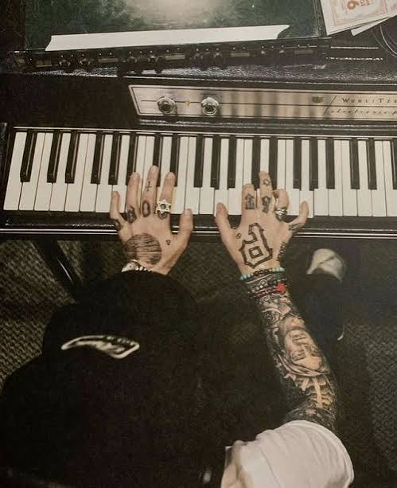
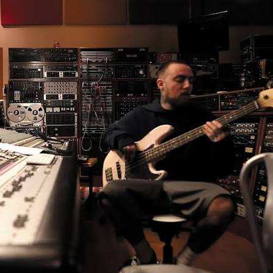

Release: November 20, 2012
Label: Rostrum Records
Production: Mac produced this EP himself backed by a full live jazz band.
Era: Recorded between his rap focused mixtape Macadelic and his experimental album Watching Movies with the Sound Off.
Mac created the suave persona of Larry Lovestein—a fictional 1950s lounge crooner—to explore his deep love for big band jazz and classic vocalists like Frank Sinatra without traditional rap expectations.
Recorded inside his LA home studio ("The Sanctuary"), Mac avoided standard sample loops, opting instead for real upright bass, brass, and saxophone solos to give it an authentic velvet-smooth sound.


The 5-track project was surprise-released on Thanksgiving Eve in 2012 as a free digital download, quickly becoming a hidden gem in his discography.